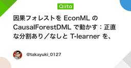
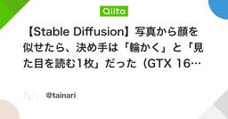
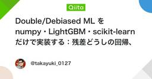
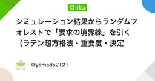
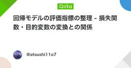
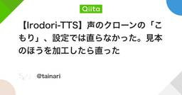

機械学習タグが付けられた新着記事 - Qiita
https://qiita.com/tags/機械学習
機械学習に関する情報が集まっています。現在16585件の記事があります。また9422人のユーザーが機械学習タグをフォローしています。
フィード
【小学5年生でもわかる】対話システムってなに？
機械学習タグが付けられた新着記事 - Qiita
対話システムとは？【子ども向け解説】チャットボットのように、人間との会話を自動で行うシステムです。例えば「今日の天気は？」と聞くと、天気を調べて「晴れです」と返答します。単に答えるのではなく、会話の流れを理解して対応します。🔗 関連記事: 対話システム（技術者向...
22分前

【文献メモ】正規化層を移動・追加して Transformer を安定化する ― Pre-LN, Sandwich-LN, Peri-LN
機械学習タグが付けられた新着記事 - Qiita
Transformer の学習を安定化する試みのうち、正規化層の配置を変更するものとして、正規化層をサブ層入口に移動する Pre-LN [Xiong2020] と、Pre-LN に加えてサブ層出口 (残差接続合流前) にも正規化層を追加する Sandwich-LN [Din...
2時間前

声から年齢は推定できるか ― Common Voice 日本語版で年代分類を試した結果
機械学習タグが付けられた新着記事 - Qiita
本記事は、AI エージェント「Muse」と筆者が共同で実施した実験の報告です。データ処理・学習・評価の実行は Muse が担い、実験設計の判断と本記事の内容確認は筆者が行いました。まとめ声から年齢（年代）がどこまで推定できるかを、Common Voice 2...
13時間前

Murmurations of Elliptic Curves──数学者たちが「ムクドリの群れ」と名づけた有限体上の楕円曲線の解の個数の揺らぎ
機械学習タグが付けられた新着記事 - Qiita
素数 $p$ で割った余りだけで計算する世界で、方程式を解き、解の個数を数える。そんな数学の世界があることを、聞いたことはありますか？その世界は、実在します。そこでは、規則なく並んでいるように見える素数と、方程式の解の個数との間に、夕暮れの空でムクドリの群れがうねるよ...
14時間前

AIが自分を改良するとき、誰が合格を出すのか：自己進化エージェント、RSI、封印された審査、科学ハーネスをめぐる10本
機械学習タグが付けられた新着記事 - Qiita
「自己進化」という言葉は、いまやほとんどのエージェント論文に付けられるラベルになりました。「再帰的自己改善（RSI）」も、モデルが自分の回答を書き直す話から、研究所が自前の学習カーネルを速くする話まで、何にでも使われています。ここに集めた記事は、ひとつの見方を共有しています。「システムが自分を変えたかどうか」はいったん脇に置き、「その変更を誰が受け入れたのか」「受け入れの手続きを疑ってもなお改善は残るのか」を問う、という見方です。前半の4本はループそのものの話、続く4本は実際の科学の問題にエージェントを向けた事例で、検証のステップが目に見えやすいものです。最後に、判定と学習の現場寄りの2本を足しました。日本語版がある記事は日本語版を先に、ない記事は英語の原文と中文版を並べています。1. 「自己進化」は実際に何を書き換えているのか最初に1本だけ読むならこのサーベイです。定義はかなり狭く取られています。変更がエージェント自身の経験から生まれ、何らかの受け入れチェックを通り、次のタスクまで持ち越されるときだけ「進化」と呼ぶ。この基準だと Self-Refine は自己修正、Reflexion
16時間前

【LLMのしくみ入門 第1回】大規模言語モデルとは何か ―「次の言葉を予測する」だけで、なぜここまでできるのか
機械学習タグが付けられた新着記事 - Qiita
この連載は、書籍『LLM 生成AIのしくみ』（LLM Primerシリーズ 第1巻）の各章を、Qiita向けに読みやすく書き直したものです。今回は第1章「大規模言語モデルとは何か」。数式はほとんど使いません。ChatGPTやClaudeのようなチャットAIを毎日使っていても、「中でいったい何が起きているのか」と聞かれると、意外と答えにくいものです。実は、その正体は驚くほどシンプルです。大規模言語モデル（LLM）がやっているのは、「これまでの文章を見て、次に来る言葉を予測する」 ことだけ。この記事では、そのたった一つの考え方から、なぜ翻訳も要約もコード生成もこなせるのかを、順を追って見ていきます。この記事で分かること「大規模」「言語」「モデル」という3つの言葉が、それぞれ何を意味しているかn-gramからTransformer、推論モデルまで、言語モデルがどう進化してきたか「ルールを書く」から「データから学ぶ」への転換が、なぜ決定的だったのかLLMがいま重要とされる理由と、同時に生まれた新しい課題LLMについての、よくある5つの誤解1. 「LLM」を3つの言葉に分解するLLMは Larg
17時間前

因果フォレストを EconML の CausalForestDML で動かす：正直な分割あり／なしと T-learner を、真の効果が分かるデータで比べる実装
機械学習タグが付けられた新着記事 - Qiita
何を確かめたいか人によって違う施策の効果（CATE：条件付き平均処置効果。「この条件の人には、どれだけ効くか」）を、因果フォレスト（Wager & Athey 2018）がどこまで当てられるか、90%区間がどれだけ当たるかを、真の効果が分かっている架空のデータで確かめました。この記事は「どう実装したか」に絞ります。論文の読み方と結果の解釈は note 記事に書きました。0. 全体の流れpip install -r requirements.txtcd src && python p05_cf.pyスクリプトは src/p05_cf.py の1本だけで、次の順に動きます。段中身出力1種を固定して、学習用6,000人・評価用2,000人のデータを10回つくる—23つの方法で人ごとの効果を推定するresults/sims.csv（1回ごとの成績）3外れ・相関・区間の当たり方・平均の効果のずれを集計results/summary.csv、results/main.json41回目のデータで、推定した効果と真の効果を重ねて描くfigures/p05_01_cate.png、results/exa
20時間前
公式ツールでQwen2-VLを書き出したら、ネット上に存在しないエラーで死んだ話：行き止まり4つと検索不能のエラー1つ
機械学習タグが付けられた新着記事 - Qiita
手順書どおりにやりました。ベンダー公式のツールキット、公式のガイド、ツールキットが「対応」とうたうモデル。ビルドステップ371件が全部緑で流れていって——最後に、丁寧に死にました。エラーメッセージは、公開インターネット的には「誰にも起きたことがない」ものでした。エラー全文がこれです。layer running Error: 'mrope_section'検索してみてください。私も認めたくないくらい何度も検索しました。結果ゼロ。フォーラムにも、GitHub issueにも、読める言語のブログにもない。あるのは私とターミナルと、この世でここにしか存在しない文字列だけ。自分のマシンが悪いのか？まず疑うのはここですよね。インストール不良、環境の相性、どこか半壊れ。なので、わざと条件を変えて2回走らせました。CPU実行：同じ場所で死亡、終了コード51。RTX 3090のマシン：同じ場所で死亡、終了コード255。最適化ステップ28層中の0層目、エラーは一言一句同じ。2台のマシン、2つの実行経路、失敗は完全に同一。少なくとも私のハードウェアの機嫌の問題ではありませんでした。（証拠の範囲をはっきり書い
21時間前

【Stable Diffusion】写真から顔を似せたら、決め手は「輪かく」と「見た目を読む1枚」だった（GTX 1660）
機械学習タグが付けられた新着記事 - Qiita
はじめに私はエンジニアではありません。AI（Claude）と一緒に、手元のパソコンだけで動く絵づくりを試しています。自分の写真を何枚か渡して、自分に似た絵を作りたいと思いました。やってみると、「似せる部品」を入れただけでは、ほとんど似ませんでした。部品を変え、重ね方を変え、写真の数を変えて、何が効いたかを1つずつ確かめました。この記事は、その記録です。先に結果を書きます。顔の「雰囲気」を写す部品（IP-Adapter Plus Face）では、強さを最大にしても似なかった。「その人を見分ける数字」を使う部品（IP-Adapter FaceID）にすると、輪かくから似た。似ている・似ていないを分けていたのは、目鼻より輪かくだった。できた絵に、顔の入れかえ（FaceFusion）を重ねると、もう1段似た。ただし、入れかえは目鼻を寄せるだけで、輪かくは直せない。輪かくは、絵を作る段で決まる。写真を4枚に増やしたら、逆に似なくなった。原因は、「顔の見た目」を読む1枚に、プログラムが小さな写真をえらんでいたこと。大きくはっきりした1枚を指定したら、似るようになった。表情は、ふつうの言い方では動か
1日前

Kling 4.0 vs Kling 4.0 Flash 徹底比較：10キーフレーム軌道制御・30秒生成上限・2段階クレジット51.4%削減
機械学習タグが付けられた新着記事 - Qiita
Lukas Vogel · Applied Research Editor · 公開日 2026-11-27TLDR フルティアのKling 4.0（最長30秒1080p/4K・最大10キーフレーム軌道補間・15アセットOmni Reference）と高速ドラフト向けKling 4.0 Flash（最長20秒720p）の仕様差および2段階ハイブリッドパイプラインによる51.4%のクレジット節約術を解説します。10キーフレーム軌道固定 vs 20秒720p高速ドラフト生成フルティアのKling 4.0は、Kling 4 ワークスペース内で最長30秒の1080p/4K 10-bit HDR映像合成・最大10キーフレームの軌道制御・最大15アセットのOmni Referenceをサポートする一方、Kling 4.0 Flashは中間キーフレーム制御と解像度を720p（最長20秒）に絞ることで高速かつ低コストなシード検証を実現しています。要点まとめ（Key Takeaways）決定論的10キーフレームスプライン（Base Kling 4.0）：開始フレーム・終了フレームに加え最大8個の中間キー
1日前
決定木：詳細な技術解説
機械学習タグが付けられた新着記事 - Qiita
この記事は「技術版」です。初心者向けの説明は別記事をご覧ください。決定木の技術的解説特徴空間を再帰的に分割。分類はジニ不純度、情報利得で分割を決定。回帰は分散削減を基準。ID3、C4.5、CARTアルゴリズムが存在。過学習防止に前剪定・後剪定が必要。ランダムフォレスト、勾配ブースティングに使用。おすすめの学習リソース決定木の高度な内容を習得するため、複数のリソースの学習を推奨します。書籍『深層学習教科書 ディープラーニング G検定 公式テキスト 第2版』（JDLA監修）G検定受験者の定番。シラバスに沿って体系的に学べる公式テキスト。『ディープラーニングG検定 最強の合格テキスト［第2版］』（SBクリエイティブ）最新シラバス完全対応で、章末問題と模擬試験PDF付き。『スッキリわかる ディープラーニングG検定 テキスト&問題演習 第3版』（TAC出版）図解が豊富でわかりやすく、初学者でも取り組みやすい。『ディープラーニングG検定 問題集 第2版』（通称：赤本）実践的な問題演習に特化。新シラバスの範囲もカバー。WebサービスAI検定ドットネットG検定の練習問題を無料で解けるサイト。スキマ時間
1日前

直線の当てはまりを残差プロットで確かめる：NumPyとMatplotlibの例
機械学習タグが付けられた新着記事 - Qiita
直線がそれなりに当てはまって見えても、入力の大きさによって、予測が決まった方向にずれることがあります。そこで「観測値 − 予測値」を残差として、入力ごとにプロットしてみます。今回は、直線では表しきれない曲がりを含む架空のデータを使います。NumPyで直線を当てはめるnp.linalg.lstsq で切片つきの直線を当てはめ、Matplotlibで観測値と残差を上下に並べます。下段にはゼロの基準線を引き、縦軸の範囲を上下対称にして、正負のずれを同じ尺度で見比べます。import numpy as npimport matplotlib.pyplot as plt# Fictional measurements have a curved response.x = np.array([0, 1, 2, 3, 4, 5, 6], dtype=float)y = np.array([2.0, 3.1, 6.0, 11.2, 18.1, 27.0, 38.2])A = np.column_stack([x, np.ones_like(x)])coef, _, rank, _ = np.linal
1日前
Whisperモデル比較を「処理時間だけ」で終わらせない：RTF・CER・VRAMを同じ動画で測るPythonベンチマーク
機械学習タグが付けられた新着記事 - Qiita
TL;DRWhisper系モデルを比較するとき、処理時間だけを並べても実運用の判断材料にはなりません。RTF（Real-Time Factor）：音声1秒を処理するのに何秒かかったかCER（Character Error Rate）：日本語の文字誤り率Peak VRAM：モデルロードから推論終了までのピークGPUメモリCold start：モデルロードにかかった時間最低でもこの4つを、同一ファイル・同一デコード条件で測る必要があります。この記事では faster-whisper の複数モデルを別プロセスで実行し、JSON Linesとして結果を残すベンチマークを作ります。結果の数値を作る記事ではなく、自分の動画とGPUで再現可能な測定方法を作るのが目的です。なぜ「○分の動画を○秒で処理」だけでは比較できないのかモデル比較でよく見るのが、次のような記述です。20分の音声を3分で文字起こしできたしかし、この数字だけでは条件が分かりません。無音が多い動画か、話し続ける動画かモデルのダウンロード時間を含むかモデルロード時間を含むかVADを有効にしたかbeam_size は同じかGPU、CUDA
1日前

Double/Debiased ML を numpy・LightGBM・scikit-learn だけで実装する：残差どうしの回帰、5分割の交差適合、100回のシミュレーション
機械学習タグが付けられた新着記事 - Qiita
何を確かめたいか交絡（施策と結果の両方に効く要因）を機械学習で取り除いて施策の効果を出す Double/Debiased Machine Learning（DML、Chernozhukov ら 2018）を、パッケージを使わずに書き、真の効果が分かっているシミュレーションで「直交化」と「交差適合」がそれぞれどれだけ効くかを確かめました。この記事は「どう実装したか」に絞ります。論文の読み方と結果の解釈は note 記事に書きました。0. 全体の流れpip install -r requirements.txtcd src && python p04_dml.py # 2コアで15分ほどスクリプトは src/p04_dml.py の1本だけで、次の順に動きます。段中身出力1種を固定してデータを100回つくる—25つの推定を回すresults/sims.csv（1回ごとの推定値と標準誤差）3偏り・ばらつき・区間に入った割合を集計results/summary.csv、results/main.json4(推定値 − 真の値) ÷ 標準誤差 のヒストグラムfigures/p04_01_dml_
1日前
画像の高画質化・アップスケール・写真復元の違いとは？AI画像処理の基本を整理する
機械学習タグが付けられた新着記事 - Qiita
はじめにAI画像処理技術の普及により、低解像度の画像を拡大したり、ぼやけた写真を鮮明にしたり、古い写真を復元したりすることが容易になりました。しかし、「高画質化」「アップスケール」「写真復元」は似ているようで、それぞれ異なる目的を持つ処理です。この記事では、それぞれの違いや用途、AI画像処理を利用する際の注意点について整理します。1. 画像の高画質化（Image Enhancement）画像の高画質化とは、画像の視覚的な品質を改善する処理のことです。代表的な処理には以下があります。ノイズ除去（Denoising）ぼけの軽減（Deblurring）輪郭の強調（Sharpening）コントラストの改善細部の補完画像の解像度を変更せずに、視認性や鮮明さを向上させることも可能です。例えば、暗い場所で撮影した写真や、圧縮によって画質が劣化した画像などに適しています。2. 画像のアップスケール（Image Upscaling）アップスケールは、画像の解像度を拡大する処理です。例えば、768 × 512pxの画像を拡大すると、以下のようになります。拡大倍率解像度総画素数オリジナル768 × 5123
1日前

【小学5年生でもわかる】決定木ってなに？
機械学習タグが付けられた新着記事 - Qiita
この記事は「小学生向け」バージョンです。より詳しい技術的な説明は別記事をご覧ください。決定木ってなに？決定木は、「はい」「いいえ」という質問を次々と重ねて答えを見つける方法です。具体例：果物の見分け「色は赤い？」→ はい → りんご「丸い形？」→ はい → みかん決定木は人間が理解しやすいのが強みです。おすすめの学習リソース決定木を初心者にもわかりやすく学ぶため、このガイドが役立ちます。書籍『深層学習教科書 ディープラーニング G検定 公式テキスト 第2版』（JDLA監修）G検定受験者の定番。シラバスに沿って体系的に学べる公式テキスト。『ディープラーニングG検定 最強の合格テキスト［第2版］』（SBクリエイティブ）最新シラバス完全対応で、章末問題と模擬試験PDF付き。『スッキリわかる ディープラーニングG検定 テキスト&問題演習 第3版』（TAC出版）図解が豊富でわかりやすく、初学者でも取り組みやすい。『ディープラーニングG検定 問題集 第2版』（通称：赤本）実践的な問題演習に特化。新シラバスの範囲もカバー。WebサービスAI検定ドットネットG検定の練習問題を無料で解けるサイト。スキマ
2日前
#【フィジカルAI解説】Egocentricとは？エゴセントリックデータの集め方について解説
機械学習タグが付けられた新着記事 - Qiita
フィジカルAIに必要なデータ構成とはフィジカルAIの研究開発で使う学習データは、「フィジカルAIデータピラミッド」として整理できます。土台となるのは、3D仮想環境で物体の位置や作業条件を変えて生成するシミュレーションデータ（合成データ）です。その上に、人が実際に作業する様子を記録した一人称視点データ、人が小型グリッパーを手に持って物のつかみ方や動かし方を実演したUMIデータ、そして人がロボットを遠隔操作して収集した実機のテレオペレーションデータが続きます。Nexdataでは、この4つの層すべてに対応するロボット学習用データセットをご用意しており、開発するモデルや対象タスクに合ったデータで、試作・学習・評価をすぐに始められます。本記事では、その中でも人の作業を一人称視点で捉えるエゴセントリックデータに着目し、モデル学習での役割と、収集を始める前に整理しておきたいポイントを解説します。Egocentricとは？一人称視点から人の作業を捉えるデータEgocentricとは、動作する本人を基準とした視点を指します。AI開発で使われるエゴセントリックデータは、頭部などに装着したカメラで、人が見て
2日前

ML基盤から深層学習まで固める技術書5選
機械学習タグが付けられた新着記事 - Qiita
はじめに去年の秋頃、LLMを使ったプロダクト開発に本格的に関わるようになった。プロンプトエンジニアリングやRAGの実装はなんとかこなせるものの、モデルの挙動が想定外になったとき「なぜそうなるのか」を説明できない自分に気づいた。APIの向こう側がブラックボックスのままだと、トラブルシュートで手が止まる。そこで基礎を固め直そうと技術書を何冊か読み始めたが、途中で挫折する本が続いた。分厚い教科書を1ページ目から律儀に読む方法がそもそも自分に合っていない。結局、必要な箇所を絞り込み、手を動かしながら読む形に切り替えてから、ようやく知識が定着し始めた。この記事では、自分がML・ディープラーニングの基盤を固める過程で実際に役立った5冊を紹介する。選定基準はシンプルで、コードや図が豊富であること、日本語で手に入ること、そして実務で「あの章を読んでおいてよかった」と感じた瞬間があることの3点だ。順番は「数学の下地 → 古典ML → 深層学習の理論 → 深層学習の実装 → 確率的思考」という流れで組んでいる。LLM時代だからこそ、この土台があるかないかで開発のスピードが変わってくる。① 機械学習のための
2日前
データパイプライン【G検定 技術解説】
機械学習タグが付けられた新着記事 - Qiita
概要データパイプラインは、G検定のシラバスで重要な概念です。この記事では、技術的な詳細について解説します。定義と背景データパイプラインについて、以下の観点から理解することが重要です：理論的背景実装方法実務での応用G検定での出題ポイント技術的詳細基本原理データパイプラインの基本となる原理を理解することは、G検定合格に向けて必須です。実装とアプリケーション実務では以下の点に注意します：パフォーマンス最適化スケーラビリティ保守性監視とロギング参考資源JDLA公式ガイドライン業界標準のベストプラクティス学術論文および白書
2日前

【小学5年生でもわかる】データパイプラインってなに？
機械学習タグが付けられた新着記事 - Qiita
データパイプライン とはAIの学習に必要なデータを、自動的に処理・供給する仕組みについて学びます。データパイプライン は、生のデータをAIが学習できる形に自動的に加工し、供給する仕組みです。パイプラインの流れデータ収集 ：センサーやログから生データを集めるデータ清掃 ：エラーやノイズを除去データ変換 ：AIが理解できる形に加工データ供給 ：学習モデルに渡す日常例SNSのお勧め機能は、毎日大量のユーザー行動データが必要です。でも、その生データはそのままAIに使えません。データパイプラインが：クリック数、閲覧時間などを抽出異常値を除去AIが理解できる数値に変換学習モデルに自動供給このプロセスを自動化しないと、大規模なAIシステムは動きません。データパイプラインは「AIの血液」。安定して良質なデータを供給することが、高性能なAIを実現するの鍵です。おすすめの学習リソースG検定に向けて、段階的に学習を進めましょう。書籍『深層学習教科書 ディープラーニング G検定 公式テキスト 第2版』（JDLA監修）G検定受験者の定番。シラバスに沿って体系的に学べる公式テキスト。まずはこの1冊から。『ディープ
2日前
データバイアス【G検定 技術解説】
機械学習タグが付けられた新着記事 - Qiita
概要データバイアスは、G検定のシラバスで重要な概念です。この記事では、技術的な詳細について解説します。定義と背景データバイアスについて、以下の観点から理解することが重要です：理論的背景実装方法実務での応用G検定での出題ポイント技術的詳細基本原理データバイアスの基本となる原理を理解することは、G検定合格に向けて必須です。実装とアプリケーション実務では以下の点に注意します：パフォーマンス最適化スケーラビリティ保守性監視とロギング参考資源JDLA公式ガイドライン業界標準のベストプラクティス学術論文および白書
2日前

「モデルの実力は自分で測る」――Kaggleのベンチマーク作りチャレンジ、5つの受賞作
機械学習タグが付けられた新着記事 - Qiita
📰 海外事例元記事：Congrats to the Kaggle Benchmarking Challenge Winners!（dev.to）dev.toとKaggleが開いた「Kaggle Benchmarking Challenge」は、他人のランキング表を読むのをやめて、自分の仕事に合う評価を自分で作ろうという企画です。集まった作品はどれも、作者が「ここが難しい」と知っている具体的な場面から出発していて、5つの受賞作はそれぞれ、最先端のモデルでもあっさり引っかかる弱点を突きました。よい評価は身近な困りごとから生まれる、というのがこの企画の結論です。カナダの時差を、19のモデル全員が間違えたJonathanSolvesProblems氏が試したのは、素朴な時差の質問です。アルバータ州は6月に夏時間の切り替えをやめたので、11月のカルガリー午前9時はトロントで午前10時。19の最新モデルに聞いたところ、全員が午前11時と答えました。答えの正解は公開のタイムゾーンデータベースから作るので、データベースが更新されるたびに測り直せる仕組みです。リリースノートを読んでも、使いどころを間違え
2日前
【小学5年生でもわかる】データバイアスってなに？
機械学習タグが付けられた新着記事 - Qiita
データバイアス とはAIの学習データに含まれる偏りについて学びます。AIは学習データから判断能力を身につけます。もし学習データが偏っていたら、AIも偏った判断をしてしまいます。これが データバイアス です。例採用選考AIが、過去の採用者が男性ばかりだったデータで学習 → 女性求職者を差別する顔認識AIが、白人の顔のデータばかりで学習 → 有色人種の顔を認識しにくいローン審査AIが、特定地域の低所得者向けデータで学習 → 不公正な判定なぜ起こるのかデータ集めに費用と時間がかかるので、手に入りやすいデータばかり使ってしまう。その結果、特定の属性のデータが不足して、バイアスが生まれます。データバイアスを防ぐには：様々な背景を持つデータを集めるデータの内容を詳しく調査するAIの出力を定期的にチェックする公平で信頼できるAIを作る第一歩です。おすすめの学習リソースG検定に向けて、段階的に学習を進めましょう。書籍『深層学習教科書 ディープラーニング G検定 公式テキスト 第2版』（JDLA監修）G検定受験者の定番。シラバスに沿って体系的に学べる公式テキスト。まずはこの1冊から。『ディープラーニング
3日前

MAGI-2徹底解説：480B MoE単一ストリーム統合音声映像と20リファレンス制御
機械学習タグが付けられた新着記事 - Qiita
MAGI-2は、総パラメータ数480B（トークンあたりアクティブ28B）のMixture-of-Experts（MoE）バックボーンを採用し、映像モーション・台詞リップシンク・フォーリー効果音・BGMを単一パスで同時合成する統合型AI動画モデルです。2026年11月の正式公開以降、MAGI-2 の公式ワークスペースではテキスト、開始フレーム、または最大20個のマルチモーダル参照入力から、最長30秒・1080p・25fpsの連続ショットを1回で出力できるようになりました。公開ベンチマークであるArtificial Analysis Video Arena（AA-Video-I2V v2.1）ではElo 1,163（±14）で世界1位を獲得しており、API換算コストも1分あたり$4.80と競合最上位モデルを大きく下回る水準で設計されています。要点まとめ単一ストリーム音声映像統合: 映像生成後に別モデルでダビングや効果音を重ねるのではなく、1回の推論パスで口元の動き・環境音・BGMの位相を同期させます。480B MoE（アクティブ28B）への飛躍: チャンク分割自己回帰の先駆けだったMAGI
3日前

AI Daily Digest 2026年11月26日: ChatGPTとCodexの上限統合、Cognition SWE-2.1、EU500億ユーロ基金
機械学習タグが付けられた新着記事 - Qiita
OpenAIがChatGPTとCodexを単一の使用枠に統合し、Cognitionは前世代のほぼ2倍のスコアを出すコーディングモデルを発表、MicrosoftはMAI Base 2を支える強化学習インフラ「Rocket」を公開、Sakana AIは30Bの日本発推論モデルを出し、Metaは自然言語の好みがランキングシグナルになる仕組みを解説、NVIDIAの研究チームはエージェントセッションを84倍速くクローンするコンテナランタイムを発表、そして欧州委員会は500億ユーロのソブリン・テック・ファンドを提案した。今日動いた7本をまとめる。1. OpenAI、ChatGPTとCodexの使用枠を12月から統合OpenAIは12月から、Plus・Pro・Business向けにChatGPTとCodexで単一の使用枠を共有すると発表した。「chat」と「work」の2つのタブを1つのインターフェースに統合する流れに沿った変更で、従来は別々に管理されていた個人チャットと業務スイートの追跡が一本化される。統合後の枠はトークンで計測され、消費量は選択したモデルとタスクによって変わる。Instantモデ
3日前
データ拡張とは？基礎から応用までわかりやすく解説
機械学習タグが付けられた新着記事 - Qiita
データ拡張とは既存データを変形・変換して、訓練データを増やす技法。機械学習やディープラーニングを学ぶ際に、非常に重要な概念です。基本的な定義データ拡張（Data Augmentation）は、既存データに変形・変換を加えて訓練サンプルを増やす手法です。画像の回転、テキストの言い換えなどが行われます。詳しい説明と特徴画像データの拡張回転、水平/垂直反転ずらし、ズーム色調変更、ノイズ追加ミックスアップ、カットミックステキストデータの拡張同義語置換句読点削除順序シャッフル（文のプール内）バックトランスレーション時系列データの拡張ノイズ追加時間シフトジャック（スケーリング）分割と結合注意点テスト時には拡張を適用しない対象タスクに適した拡張を選択実装上の注意点強度の調整弱い拡張：元のデータとの類似性を保持強い拡張：より多様だが、セマンティック情報を失う可能性テスト時の拡張テスト時に拡張を使う（Test Time Augmentation）と精度が上がることもあるドメイン固有の拡張医療画像の回転は無意味→ タスク・ドメインに応じた拡張設計G検定での出題傾向データ拡張はG検定の頻出トピックです。シラ
3日前

【小学5年生でもわかる】データ拡張ってなに？
機械学習タグが付けられた新着記事 - Qiita
データ拡張ってなに？「限られたデータから、新しいデータを作り出す」方法のこと。かんたんな説明写真を『右に90度回転』『反転』『ちょっと暗くする』などと加工して、同じ写真から新しい写真を作り出すようなものです。日常生活での例え1枚の写真を『回転』『拡大』『色を変える』などで変形させて、元々1枚だったのが5枚に増えるような感じです。もっと詳しく知りたい人へこのテーマについてもっと詳しく学ぶなら、技術版の記事がおすすめです！おすすめの学習リソースデータ拡張をもっと詳しく学ぶなら、下の書籍やWebサービスがおすすめです。書籍『深層学習教科書 ディープラーニング G検定 公式テキスト 第2版』（JDLA監修）G検定受験者の定番。シラバスに沿って体系的に学べる公式テキスト。まずはこの1冊から。『ディープラーニングG検定 最強の合格テキスト［第2版］』（SBクリエイティブ）最新シラバス完全対応で、章末問題と模擬試験PDF付き。公式テキストの補強に。『スッキリわかる ディープラーニングG検定 テキスト&問題演習 第3版』（TAC出版）図解が豊富でわかりやすく、初学者でも取り組みやすい。文系の方にも特に
3日前

【実装検証】ローカルGPU vs クラウドAPIの損益分岐とKVキャッシュ計算：重み量子化だけではVRAM見積もりが破綻する理由
機械学習タグが付けられた新着記事 - Qiita
1. 結論と設計判断基準ローカルLLM推論サーバのサイジングにおいて、「パラメータ数 × 量子化ビット数（例：32Bモデルを4bit量子化すれば約16GBだから24GB GPU 1枚で長文並列処理できる）」という概算は、コンテキスト長 32k〜128k や並列リクエスト実行時に高確率でOOM（Out Of Memory）を起こします。実運用で破綻しないVRAM見積もりと、クラウド従量課金APIとの損益分岐判断には、以下の3要素を分離して計算する必要があります。モデル重み（Static Weights）：量子化（FP16 / INT8 / INT4）が直接効く領域。KVキャッシュ（Dynamic KV Cache）：2 × 層数 × KVヘッド数 × ヘッド次元 × コンテキスト長 × 並列数 × バイト数 で線形増加し、GQA（Grouped-Query Attention）比率とKV量子化の有無に支配される領域。CUDAコンテキスト・中間Activationオーバーヘッド：フレームワーク（vLLM / llama.cpp）が確保する予約領域（実測 1.2〜2.5 GiB）。2. GQ
3日前

ダートマス会議とは？AI誕生の瞬間をわかりやすく解説
機械学習タグが付けられた新着記事 - Qiita
はじめにダートマス会議（Dartmouth Summer Research Project on Artificial Intelligence）は、1956年にアメリカのダートマス大学で開催された6週間のワークショップです。この会議は、人工知能という学問分野を正式に誕生させた重要なイベントであり、AI研究の歴史的転換点となりました。定義ダートマス会議：1956年6月から8月、ダートマス大学で開催AIという名称が初めて正式に使用された学術会議人工知能研究の正式な開始を象徴するイベント詳細説明会議の背景開催前の状況：1940年代：コンピュータ理論の誕生（チューリング、フォン・ノイマン）1950年：チューリングが「Computing Machinery and Intelligence」を発表認知科学者たちが「機械による思考は可能か」を真摯に討議開催の動機：複数分野の研究者が協力して、機械知能の可能性を探る年1回ではなく、集中的な6週間の共同研究参加者と彼らの貢献名前所属貢献分野ジョン・マッカーシーMIT関数型プログラミング、AIの父マービン・ミンスキーPrincetonニューラルネット、
3日前

Seedance 2.5 深掘り解説：Image-to-Video 世界1位 (1,162 Elo)、30秒カメラ制御と Draft Mode 68.7% クレジット節約術
機械学習タグが付けられた新着記事 - Qiita
Kenji Tanaka · Inference Systems Writer · Published 2026-11-25TLDR Artificial Analysis Image-to-Video Leaderboard (AA-Video-I2V v2.1) で世界第1位（1,162 Elo）を獲得した Dreamina Seedance 2.5 のアーキテクチャと、Draft Mode（480p）から1080p/4Kマスターへ昇格させてクレジット消費を68.7%削減する Seedance 2.5 の2段階ワークフローを解説します。Source: seedance2-5.co Unified Video & Image Generation StudioSource: Artificial Analysis Image-to-Video Leaderboard (AA-Video-I2V v2.1)Draft Mode (480p) と 1080p マスターの2段階クレジット計算Stage 1（480p Draft Mode でカメラ軌道を3回検証）：5秒クリップ1本あたり約2
3日前

Happy Wan 徹底解説：アリババ HappyHorse 1.1 と Wan 3.0 を統合した4エンジン音声同期動画スタジオ
機械学習タグが付けられた新着記事 - Qiita
Elena Rossi · AI Adoption Analyst · Published 2026-11-25TLDR Happy Wan（ハッピー・ワン）は、アリババが新たに公開した HappyHorse モデルと Wan（通義万相） モデルを1つの制作基盤へ統合した最新AI動画生成スタジオです。Happy Wan ワークスペースに搭載された4つの動画エンジン、最大9枚の参照画像ロック、30秒ネイティブ音声同期、および初回50無料クレジットの活用法を解説します。HappyHorse と Wan を融合した30秒オーディオビジュアル生成アーキテクチャHappy Wan はアリババが新たにローンチした HappyHorse と Wan を統合したモデル（Happy Wan is Alibaba's newly launched model that combines the HappyHorse and Wan models）であり、HappyHorse のマルチ参照アイデンティティ固定および単一パス音声合成と、Wan 3.0 の30秒カメラ軌道制御を Happy Wan スタジオ内で
3日前

【小学5年生でもわかる】ダートマス会議ってなに？
機械学習タグが付けられた新着記事 - Qiita
ダートマス会議とは、1956年にアメリカの大学で開かれた、AI（人工知能）が「正式に誕生した」とも言える会議です。このとき、科学者たちが「機械が人間のように考える？できるんじゃないか！」と考え始めました。それまでは、「機械は決まったことしかできない」と思われていました。でも、この会議で「機械も学ぶことができるのでは？」という新しいアイデアが出てきたんです。この会議がきっかけで、AIの研究が正式に始まりました。だから、AIの歴史はこの会議から始まったと言えるんです。専門的な仕組みや関連技術を詳しく知りたい方はこちら👉 ダートマス会議とは？AI誕生の瞬間をわかりやすく解説おすすめの学習リソースダートマス会議がAIの研究を正式に始めた、大切な会議だったんですね。書籍『深層学習教科書 ディープラーニング G検定 公式テキスト 第2版』（JDLA監修）G検定受験者の定番。シラバスに沿って体系的に学べる公式テキスト。まずはこの1冊から。『ディープラーニングG検定 最強の合格テキスト［第2版］』（SBクリエイティブ）最新シラバス完全対応で、章末問題と模擬試験PDF付き。公式テキストの補強に。『スッキ
4日前

LLMの中身から運用まで技術書5選
機械学習タグが付けられた新着記事 - Qiita
はじめに社内の問い合わせ対応ボットを作ったとき、最初の2週間は順調だった。ベクトルDBに社内ドキュメントを突っ込んで、プロンプトを整えて、デモを見せたら拍手までもらえた。崩れたのはそのあとだ。「古い規定のPDFを拾ってくる」「表の中の数値を間違える」と報告が上がり始めた。自分には原因の切り分け方がわからなかった。検索が悪いのか、プロンプトなのか、そもそもモデルがその質問に答えられる形になっていないのか。切り分けるための語彙を持っていなかった。そこで気づいたのは、自分がLLMをHTTPのエンドポイントとしてしか理解していなかったことだ。トークナイズから埋め込み、注意機構、デコードまでの流れを頭の中で追えないと、どこが壊れているか見当がつかない。運用側も同じで、評価データもログもない状態では「なんとなく悪化した」としか言えない。それから一年ほどかけて、仕組みの理解・自分で組んでみる・本番で回す、という3層を本で埋めていった。この記事ではその過程で効いた5冊を、自分が読んだ順に近い形で並べる。網羅的なリストを作るつもりはない。今目の前にある詰まりに対して、どれを開けばいいかがわかる並びにした
4日前
AWS AIプラクティショナー試験対策⑮：総まとめ：直前チェックリストと混同しやすい用語総ざらい
機械学習タグが付けられた新着記事 - Qiita
AWS AIプラクティショナー試験対策⑮：総まとめ：直前チェックリストと混同しやすい用語総ざらいこの記事で分かることAIF-C01の試験形式と5分野の配点・要点を1枚でおさらい連載①〜⑭で扱った「混同しやすい用語」の決め手をまとめて確認試験前日・当日にやることのチェックリストAWS認定「AWS Certified AI Practitioner（AIF-C01）」試験対策連載の最終回です。①〜⑭の要点だけを抜き出して、直前に見返せる1本にまとめました。詳しい解説は各回の記事へリンクしてあるので、気になる分野だけ戻って読んでください。試験の全体像をもう一度項目内容試験コードAIF-C01カテゴリFoundational（基礎レベル）問題数全65問（スコア対象50問＋採点対象外15問）試験時間90分合格スコア700（100〜1,000の換算スコア）受験料100米ドル（日本では15,000円・税別）有効期限3年合格スコアの700は「正答率70%」という意味ではありません。換算スコアなので、解けなかった問題があっても諦めず、最後まで解き切ることが大切です。分野別チェックリスト：5分野の要点分野
4日前

同じ12層を3回回すだけで賢くなる理由、Inkling 2 Mini の“周回”を追う
機械学習タグが付けられた新着記事 - Qiita
まず、層を増やす以外の計算の足し方画像: thinkingmachines.ai より画像: drhb.github.io より通常の Transformer は、入力を下から上まで一度だけ通します。層を深くすれば計算量は増やせますが、重みも増えますし、推論時に「もう少し考えさせたい」と思っても柔軟には動かしにくい。そこで出てくるのが、同じ重みを何度も使い回すループ型の設計です。入力に対して、同じ中間計算を複数回かける。発想としては単純ですが、モデルの振る舞いはかなり変わります。Universal Transformer の系譜では、反復で精度を上げる考え方自体は昔からありました。Inkling 2 Mini もこの流れに乗っていますが、素朴な「前回の出力をそのまま次回の入力に渡す」形ではありません。公式発表では 24 層を 4 つの 6 層ブロックに分け、最初と最後のブロックは 1 回だけ、中央の 12 層だけを 3 回通します。つまり“周回”の正体は、モデル全体の再実行ではなく、真ん中だけを繰り返すことです。ここで大事なのは、ただ同じ処理を 3 回やるだけではないことです。Good
4日前

交差検証とは？基礎から応用までわかりやすく解説
機械学習タグが付けられた新着記事 - Qiita
交差検証とはデータセットを複数に分割して、モデルの汎化性能を正確に評価する手法。機械学習やディープラーニングを学ぶ際に、非常に重要な概念です。基本的な定義交差検証（Cross Validation）は、データセットを k 個の部分に分割し、k-1 個を訓練、1 個を検証に用いる手法を k 回繰り返します。汎化性能の正確な推定が可能です。詳しい説明と特徴k-fold 交差検証データを k 等分し、k回の検証を行います。メリット：汎化性能の正確な推定全データを活用デメリット：計算量が k 倍時系列データに不向き時系列交差検証時間の順序を保って分割（ウォークフォワード法）Stratified k-foldクラス分布を保つ分割方法（不均衡データに有効）実装上の注意点k の選択一般的に k=5 または 10小規模データセット → k 大大規模 → k 小時系列データランダムな分割は避け、ウォークフォワード法を使用不均衡データStratified k-fold で、各フォールドのクラス分布を保持G検定での出題傾向交差検証はG検定の頻出トピックです。シラバスに明記されており、基本的な理解が問われるこ
4日前
【文献メモ】残差接続部に重みを追加して Transformer を安定化する ― ReZero, Admin, DeepNet
機械学習タグが付けられた新着記事 - Qiita
Transformer の学習を安定化する試みのうち、残差接続の恒等パスと変換部分の比率を重みで調整するものとして、ReZero [Bachlechner2021], Admin [Liu2020], DeepNet [Wang2024] があります。Admin は ReZero を、DeepNet は ReZero と Admin を引用しています。重み追加箇所重みの形学習初期値正規化ReZeroサブ層出力側スカラーする0撤去Admin残差接続側$d_{\mathrm{model}}$ 次元する最初の 1 バッチから決定Post-LNDeepNet残差接続側スカラーしない層数から決定Post-LN※ DeepNet はこれに加えて、サブ層内の FFN の重みと、アテンションの V 変換と出力変換の重みの初期値を層数に応じて縮小します。参考文献[Bachlechner2021] Thomas Bachlechner, Bodhisattwa Prasad Majumder, Huanru Henry Mao, Garrison W. Cottrell, Julian McAuley.
4日前

AWS AIプラクティショナー試験対策⑭：AIのセキュリティ・コンプライアンス・ガバナンス
機械学習タグが付けられた新着記事 - Qiita
AWS AIプラクティショナー試験対策⑭：AIのセキュリティ・コンプライアンス・ガバナンスこの記事で分かること分野5（配点14%）の2つのタスク「5.1 AIシステムを守る方法」「5.2 ガバナンスとコンプライアンス」の全体像共同責任モデルで「AWSの責任」と「利用者の責任」の線引きをする方法生成AIセキュリティスコーピングマトリクスの5つのスコープと、スコープごとの責任の違い試験で狙われやすい「似ているサービスの区別」（GuardrailsとMacie、CloudTrailとConfigなど）分野5は、これまでの連載で扱ってきた生成AIの知識に、AWSのセキュリティの基本を組み合わせた分野です。AI特有の新しい話はスコーピングマトリクスとGuardrailsくらいで、あとは「誰が何にアクセスできるか」「データをどう守るか」「監査でどう証明するか」という基本が問われます。分野5の全体像：守る（5.1）と証明する（5.2）タスク内容イメージ5.1AIシステムを守る方法鍵をかける・壁を作る・怪しいものを弾く5.2ガバナンスとコンプライアンス決まりを作る・記録を残す・監査に答える出題のされ方
4日前

AWS LambdaがGPU対応――サーバーレスでNVIDIA T4からL40Sまで使える時代が来た
機械学習タグが付けられた新着記事 - Qiita
こんにちは！ファンリード DXP事業部AWSグループのMartimです！2026年11月18日、AWSはAWS Lambda上でGPUインスタンスをサポートすることを発表しました。Lambda Managed Instances上のEvent FunctionsでEC2 Gシリーズ（NVIDIA GPUを搭載したインスタンスファミリー）が利用可能になり、サーバーレスでGPUワークロードを実行できるようになっています。「Lambdaで機械学習推論をやりたいけど、GPUがないから結局SageMakerやECSに逃げるしかない」という経験をされた方は多いのではないでしょうか。個人的に、この発表はサーバーレスの"最後の壁"がひとつ崩れた瞬間だと感じました。何ができるようになったか一言でいうと、Lambda関数の中でGPUを使った処理が実行できるようになりました。AWSがGPUドライバ、スケーリング、ヘルスチェック、ロードバランシングをすべて管理します。これまでGPUを使いたい場合、以下のような選択肢がありました。方法特徴課題Amazon SageMakerモデルのトレーニング・推論に最適化オー
4日前
成功したいなら定式化を疑え
機械学習タグが付けられた新着記事 - Qiita
はじめに技術開発がうまくいかない原因は、技術力や実装力の不足ではなく、そもそも問題の定式化が間違っていることかもしれません。本記事では、過去の技術開発事例を通じて、問題の定式化を疑うことの重要性を考えます。想定する読者VLA（Vision-Language-Action）の研究・開発に携わる方を想定しています。技術としての定式化よりも上位の階層で定式化を疑え以下の事例のなかで、技術としての定式化よりも上位の部分での定式化を疑ってかかる必要があることを主張したい。失敗している理由の一つは、定式化の失敗アナログハイビジョンの失敗高精細な映像を実現するという目標は正しかった。しかし、その実現方法としてアナログ伝送方式を中心に開発を進めた結果、デジタル放送への移行において先行投資が重荷になった。技術的に優れた方式を開発することと、その方式が市場で普及することは別の問題である。本来、開発課題として定式化すべきだったのは、アナログ方式で高精細映像を実現することではなく、利用者が高精細な映像を低コストで、便利に楽しめる放送システムを実現することだったのではないだろうか。アナログハイビジョン（MUSE
4日前

【小学5年生でもわかる】交差検証ってなに？
機械学習タグが付けられた新着記事 - Qiita
交差検証ってなに？「何度も別の問題で試して、本当に実力があるか確認する」方法のこと。かんたんな説明テスト勉強で、教科書の問題で何度も練習して、最後に別の模試で本当に実力があるか確認する感じです。何度も違う問題で試すから、より正確に実力がわかります。日常生活での例え期末テストの前に、4回の練習テストを別々にやって、『全部で7割以上取れたから、本番も大丈夫だろう』と判断する感じです。もっと詳しく知りたい人へこのテーマについてもっと詳しく学ぶなら、技術版の記事がおすすめです！おすすめの学習リソース交差検証をもっと詳しく学ぶなら、下の書籍やWebサービスがおすすめです。書籍『深層学習教科書 ディープラーニング G検定 公式テキスト 第2版』（JDLA監修）G検定受験者の定番。シラバスに沿って体系的に学べる公式テキスト。まずはこの1冊から。『ディープラーニングG検定 最強の合格テキスト［第2版］』（SBクリエイティブ）最新シラバス完全対応で、章末問題と模擬試験PDF付き。公式テキストの補強に。『スッキリわかる ディープラーニングG検定 テキスト&問題演習 第3版』（TAC出版）図解が豊富でわかり
4日前

クオンツ運用の自社開発リサーチ基盤 QuantG：2 週間でデータ・因子定義・マイニングを作り直した
機械学習タグが付けられた新着記事 - Qiita
はじめにQuantG は、日本株のクオンツ運用のために私が自社で開発している投資リサーチ基盤です。データの取得、因子の研究、毎日の銘柄選定、模擬口座、ヒストリカルリプレイまでを、ひとつのシステムで行います。因子研究の中心は、LLM に因子のコードを書かせ、それをシステムが検証することです。この 2 週間（2026 年 11 月 10 日〜22 日）で、システムの土台にあたる 3 つの層、データウェアハウス・因子定義・因子マイニングをほぼ作り直しました。メインブランチへのコミットは 600 回を超えます。この記事では、まず QuantG がどんなシステムなのかを紹介し、次になぜ作り直したのか、何を変えたのかを説明します。最後に、クオンツ運用の私募ファンドにとって、投資リサーチ基盤を自社で持つことにどんな価値があるのかをまとめます。QuantG とはひとことで言えば、QuantG はそのまま動かせる日本株向けの投資リサーチ基盤です。次のものがそろっています。J-Quants 全データの PIT クレンジング済みウェアハウス：J-Quants の 16 種類のデータソースをすべて同期し、時点
5日前

AWS AIプラクティショナー試験対策⑬：責任あるAI（公平性・バイアス・説明可能性）
機械学習タグが付けられた新着記事 - Qiita
AWS AIプラクティショナー試験対策⑬：責任あるAI（公平性・バイアス・説明可能性）AWS認定AIプラクティショナー（AIF-C01）の**分野4「責任あるAIに関するガイドライン」は配点14%で、タスク4.1「責任あるAIの開発」とタスク4.2「透明性と説明可能性」から出題されます。派手な技術の話は少なく、「この場面ではどの考え方・どのAWSサービスが正解か」**を判断する問題が中心です。この記事で分かることAWSの責任あるAIの8つの次元と、試験ガイドが挙げる6つの特徴バイアスと公平性の関係、混同しやすい「透明性」と「説明可能性」の区別症状から正解を導くキーワード対応表と、AWSサービスの対応表責任あるAIとは責任あるAIとは、AIシステムを安全・公平・信頼できるものとして設計・開発・運用するための原則と実践のことです。「精度が高い」だけでは足りず、「人に害を与えないか」「判断の根拠を説明できるか」まで問われます。AWSは責任あるAIを8つの次元で整理しています。次元意味公平性（Fairness）特定のグループを不当に優遇・不利にしない説明可能性（Explainability）な
5日前

交差エントロピー（テック版版）
機械学習タグが付けられた新着記事 - Qiita
ひとこと概要：情報理論に基づく分類損失関数。2つの確率分布のKL divergenceを計測します。関連記事： この記事は「テック版」です。キッズ版テック版どちらからでも読み始められます！交差エントロピー（Cross Entropy）は、情報理論に深く根ざした標準的損失です。H(p,q) = -Σ p(x) log q(x) = H(p) + D_KL(p||q)最小化すると、KL divergence（分布間の距離）が最小化されます。最尤推定との等価性により、統計的な正当性があります。数値安定性のため、softmaxとCEを統合したLog-Softmaxを使用します。おすすめの学習リソース【交差エントロピー】を学ぶなら、体系的なテキストで基礎から理解することが大切です。書籍『深層学習教科書 ディープラーニング G検定 公式テキスト 第2版』（JDLA監修）G検定受験者の定番。シラバスに沿って体系的に学べる公式テキスト。まずはこの1冊から。『ディープラーニングG検定 最強の合格テキスト［第2版］』（SBクリエイティブ）最新シラバス完全対応で、章末問題と模擬試験PDF付き。公式テキストの
5日前

AWS AIプラクティショナー試験対策⑫：モデルの評価方法と評価指標の対応
機械学習タグが付けられた新着記事 - Qiita
AWS AIプラクティショナー試験対策⑫：モデルの評価方法と評価指標の対応この記事で分かること翻訳・要約・分類・回帰、それぞれに合う評価指標の対応BLEU・ROUGE・BERTScore・F1・RMSEの混同しやすい違い「学習データでの評価だけでは不十分」な理由と、正しい評価の進め方Amazon Bedrock Model Evaluationの評価方法分野3（3.4）の範囲です。前回の⑪ではモデルの適応手法（微調整・RAG・継続的事前学習）の使い分けを整理しました。今回は「作ったモデルをどう測るか」がテーマです。評価の3つのアプローチアプローチやり方長所短所人間による評価人が回答を読んで品質を採点ニュアンス・丁寧さ・ブランドの声を測れる遅い・コストが高いベンチマークデータセット決まった問題集でモデルを測る再現性がありモデル同士を比較できる自社の用途とズレることがあるAmazon Bedrock Model Evaluation自動・人間・判定モデル・RAGの評価をマネージドで実行仕組みを作らず比較できる用途に合うデータセットが別途必要自動評価は「速い・安い・再現性がある」が、測れるの
5日前

【小学5年生でもわかる】交差エントロピーってなに？
機械学習タグが付けられた新着記事 - Qiita
ひとこと概要：分類タスク（複数選択肢から1つを選ぶ）に最適な損失関数。確率的な誤差を計測します。関連記事： この記事は「キッズ版」です。キッズ版テック版どちらからでも読み始められます！交差エントロピーは、確率的な「外れ具合」を計測する損失関数です。分類タスクのほぼ標準です。シンプルな例メール分類：「スパム or 正常」モデルの予測：スパムの確率70%、正常30%正解：「スパム」（100%確率）間違いの程度：70%なので完全には間違っていないが、100%じゃないので少し間違い。計算Binary：Loss = -(y*log(p) + (1-y)*log(1-p))確率的な考え方完全に正解：p = 0.99 → Loss = -log(0.99) = 0.01（小さい）少し間違い：p = 0.6 → Loss = -log(0.6) = 0.51（中程度）大間違い：p = 0.05 → Loss = -log(0.05) = 3（大きい）分類タスクでは、ほぼすべてのプロジェクトで使われています。おすすめの学習リソース【交差エントロピー】を学ぶなら、体系的なテキストで基礎から理解することが大
5日前

シミュレーション結果からランダムフォレストで「要求の境界線」を引く（ラテン超方格法・重要度・決定木・等高線）
機械学習タグが付けられた新着記事 - Qiita
はじめにシミュレーションで設計の検討をしていると、次のような問いによく出会います。入力パラメータがたくさんあるけれど、結果に効いているのはどれか結果を目標以下に収めるには、各パラメータをどこまでに抑えればよいか（要求値）2 つのパラメータを同時に変えたとき、どの組み合わせなら目標を満たすかパラメータを 1 つずつ変える感度解析でも、ある程度はわかります。ただ、パラメータ同士の組み合わせの効き方（交互作用）は見えません。かといって、すべての組み合わせを格子状に回すと、計算量が爆発します。そこでこの記事では、次の流れを 1 本の Python スクリプトにまとめました。ラテン超方格法で、少ない点数でパラメータ空間をまんべんなく試すその結果をランダムフォレストに学習させ、代理モデル（サロゲートモデル）を作る代理モデルから、重要度、部分依存、決定木のルール、**要求の境界線（等高線）**を出す代理モデルは一瞬で予測できます。なので、本物のシミュレーションでは何日もかかるような細かい格子の探索も、すぐにできます。シミュレーター部分は関数 1 つに分けてあるので、「入力 → 評価値（1 つの数）」
5日前
CRISP-DM【G検定 技術解説】
機械学習タグが付けられた新着記事 - Qiita
概要CRISP-DMは、G検定のシラバスで重要な概念です。この記事では、技術的な詳細について解説します。定義と背景CRISP-DMについて、以下の観点から理解することが重要です：理論的背景実装方法実務での応用G検定での出題ポイント技術的詳細基本原理CRISP-DMの基本となる原理を理解することは、G検定合格に向けて必須です。実装とアプリケーション実務では以下の点に注意します：パフォーマンス最適化スケーラビリティ保守性監視とロギング参考資源JDLA公式ガイドライン業界標準のベストプラクティス学術論文および白書
5日前

僕は世界を知ろうと思うーAIと脳科学の数式20ー第7話「何を知れば、何がわかるのか『相互情報量』」
機械学習タグが付けられた新着記事 - Qiita
第7話 何を知れば、何がわかるのか ― 相互情報量相互情報量I(X;Y)=\sum_{x,y}p(x,y)\log\frac{p(x,y)}{p(x)p(y)}小さな謎僕は、とある研究所で働いている。目の前には、赤か青のボールが一つ入った箱がある。箱の中を見ることはできない。先輩が、三つのランプを指さした。「このランプは、それぞれ箱の中身を予測して赤か青に光る。どれを信用すればいいと思う？」三つのランプは、見た目には同じように赤や青に光る。僕は答えに迷った。先輩は、過去の実験記録を見せてくれた。ランプA：正解率50%ランプB：正解率75%ランプC：正解率100%「それならCですね。必ず当たるんですから」「そうだな。では、Bはどれくらいの情報を教えてくれると思う？」「75%当たるんだから……75%くらいでしょうか？」先輩は首を横に振った。「正解率と、得られる情報の量は同じじゃないんだ」僕はもう一度、三つのランプを見た。どれも赤か青に光るだけだ。それなのに、教えてくれる情報の量が違うという。何かを知ったことで、僕たちは一体どれくらい、わからなかったことを減らせるのだろう？数式で謎解き何も知
5日前

実録・ゲーム強化学習適用記 #4 ― 強化学習は「重み」だけを学ぶ：Behavior Treeで作るゲームバランスQA
機械学習タグが付けられた新着記事 - Qiita
はじめに前回の投稿では、強化学習（Reinforcement Learning）とビヘイビアツリー（Behavior Tree）を組み合わせ、数日間停滞していた学習を約8時間で突破した経験を紹介しました。「実行はルールベースが、判断は強化学習が担当する」という設計でした。しかし、この設計にもまだ課題が残っていました。ひとつは、強化学習エージェントがゲームごとの観測空間・行動空間に縛られることです。ゲームが変わるたびに、パッチが当たるたびに作り直しが必要になります。もうひとつは、学習済みのポリシーをゲームデザイナーが読めないことです。「なぜこう動くのか」を説明できないAIは、バランス調整の現場では使いにくいと痛感しました。では、LLMにすべての判断を任せればよいかというと、それも現実的ではありません。戦闘中のビヘイビアツリーは0.3秒ごとに判断を下すため、毎回LLMを呼ぶと遅く、コストも膨らみます。そこで本記事では、前回の考え方をさらに一歩進め、強化学習が学ぶものを「行動の選択」から「重み」だけに絞ったゲームバランスQA基盤「BT-QA」を紹介します。判断の分割：構造はデザイナー、重みは
5日前

AWS AIプラクティショナー試験対策⑪：モデル適応手法の使い分け（微調整・RAG・継続的事前学習）
機械学習タグが付けられた新着記事 - Qiita
AWS AIプラクティショナー試験対策⑪：モデル適応手法の使い分け（微調整・RAG・継続的事前学習）この記事で分かること微調整（ファインチューニング）・継続的事前学習・RAG・プロンプトエンジニアリングの違い「ラベル付きデータがあるか」が判断の分かれ目になる理由データ拡充（データオーグメンテーション）の役割と使いどころ試験で問われる「キーワード → 正解」の対応パターン分野3（タスク3.3「基盤モデルの学習と微調整のプロセス」）の範囲です。分野3は配点28%で最大の分野なので、ここは確実に押さえたいところです。1. まず全体像：4つの手法は「何を変えるか」で区別する基盤モデルを自社の用途に合わせる方法は、大きく4つあります。試験では「どれを選ぶべきか」がシナリオ問題で問われます。区別の軸は2つです。モデルの重み（パラメータ）を変えるか使うデータにラベル（正解）があるか手法重みを変えるか使うデータコストの目安プロンプトエンジニアリング変えない指示文と few-shot の例最も低いRAG変えない社内文書などの外部データ低〜中微調整（ファインチューニング）変えるラベル付きデータ（入出力のペ
5日前

深層学習なしでCartPoleを攻略する
機械学習タグが付けられた新着記事 - Qiita
はじめにCartPoleってあるじゃないですか？棒を倒さないようにするやつ。強化学習の定番の課題ですね。世の中の記事はフヌケている。CartPoleを深層学習で解く記事しかない。「ホニャララ（深層学習の難しい手法）を使ってGPUで約10分かけて20000ステップ学習したら倒れなくなりました！（まだときどき倒れるケド）」CartPoleはもっと簡単に・速く・安定して解けるというのに！というわけで、Augmented Random Search(ARS)というので解いてみた。いきなり結果からARSで解いた結果がこちら。この安定感よ。棒が微動だにしない！500回やらせたんですけど、1回も倒れなかったです。(なので、平均報酬はMAXの500)学習時間は0.1秒未満！！深層学習なら数百エピソードかかるところ、ARSなら8～24回でいけました！ARSの仕組み状態から、いい感じに行動を出す関数（方程式）を求める。状態（位置や速度など）を方程式にぶち込むと、右に動くべき度合いは0.7です、みたいに出てくる。こういうイメージ。行動 = 位置×w₁ + 速度×w₂ + 角度×w₃ + 角速度×w₄「位置、
5日前
画像生成AIで髪型プレビューを作るときに確認している評価観点
機械学習タグが付けられた新着記事 - Qiita
はじめに髪型や髪色のプレビューは、生成AIの画像品質を評価するのに向いている題材です。風景や静物と違い、入力と出力のあいだで「本人らしさ」を保つ必要があり、失敗がはっきり分かります。ここでは、ブラウザで動くヘアスタイルプレビューを触りながら、実務で確認している観点を整理します。1. 同一性の保持同じ人物の写真から複数の髪型を生成したとき、顔立ちや肌の質感がどこまで保たれるかを見ます。目・鼻・口の位置関係がずれる、肌のトーンが変わる、といった変化は、ユーザーにとっては別人物に見える大きな違和感になります。1枚ごとの見栄えより、複数枚を並べたときの一貫性を優先して確認しています。2. 髪と輪郭の境界もみあげ、生え際、首まわりの描写は破綻しやすいポイントです。ぼかしが強すぎると合成写真のように見え、逆にエッジが立ちすぎると切り抜きのように見えます。拡大して境界のなじみを確認します。3. 光と影の整合性元写真の照明と、生成した髪のハイライトや影の向きが揃っているかを見ます。屋内の暖色照明なのに髪だけ青白い、というケースはよくあります。4. 反復生成でのドリフト一度生成した画像をさらに編集・再生
5日前

なぜAttentionは「√d」で割る？コイントスで直感理解！
機械学習タグが付けられた新着記事 - Qiita
はじめに大規模言語モデル（LLM）で使用されている Transformer の核心部分として Attention という機構があります。$$Attention(Q, K, V) = Softmax\left(\frac{QK^T}{\sqrt{d}}\right)V$$Attention では特徴量の増加に伴う勾配消失を防ぐために、自身の次元数の平方根（$\sqrt{d}$）でスケーリングを行います。といっても、なんで $\sqrt{d}$ を用いてスケーリングするのかよくわからなかったため、色々調べてみました。その中で「なるほど！」と腑に落ちたので、備忘も兼ねて Attention におけるスケーリングの謎を、「コイントス」の例えを交えながら分かりやすくまとめてみました！もしよかったら、読んでみてもらえると嬉しいです！そもそも Attention とは？Attention Is All You Needで一躍話題となったLLMの心臓部の機構で、文脈の中でどの単語に注目すべきかを計算し、重み付けして情報を取り出す機構です。公式は以下になります。$$Attention(Q, K, V)
6日前

【小学5年生でもわかる】CRISP-DMってなに？
機械学習タグが付けられた新着記事 - Qiita
CRISP-DM とはAIプロジェクトを体系的に進めるための標準プロセスについて学びます。CRISP-DM は、データマイニング（AIプロジェクト）を進めるための国際標準プロセスです。6つの段階ビジネス理解 ：何を達成したいのかデータ理解 ：どんなデータが手に入るのかデータ準備 ：データを学習可能な形に加工モデリング ：AIモデルを構築評価 ：AIが目的を達成しているか確認展開 ：本番環境で運用日常例企業が「顧客チャーンを予測するAI」を作りたいとします。CRISP-DMに従えば：ビジネス理解 ：どの顧客が辞めるのか予測したいデータ理解 ：過去の顧客データが揃っているか確認データ準備 ：データをクレンジングモデリング ：機械学習モデルを構築評価 ：精度が充分か判定展開 ：実際の営業に使用CRISP-DMは「プロジェクト失敗を防ぐ」ための実証済みのアプローチです。ビジネスの視点からAIプロジェクトを進めることが重要です。おすすめの学習リソースG検定に向けて、段階的に学習を進めましょう。書籍『深層学習教科書 ディープラーニング G検定 公式テキスト 第2版』（JDLA監修）G検定受験者の定
6日前

機械学習の数学を固める技術書5選
機械学習タグが付けられた新着記事 - Qiita
はじめに自分が機械学習の実装を始めた頃、論文を開いて最初の数式で手が止まることがよくあった。アーキテクチャの図は追える。ところが損失関数の導出に入った瞬間、添字と転置の記号列が意味を持たなくなる。はっきり自覚したのは、レコメンドの検証で行列分解を試したときだ。TruncatedSVD を呼べば結果は出る。けれど「なぜ特異値の大きい順に残すと情報が保たれるのか」と同僚に聞かれて何も答えられなかった。次元数をいくつにするかも、精度を見ながら勘で決めていた。ライブラリは動かせるのに、判断の根拠が自分の中に無い状態だった。そこから数学をやり直すことにしたが、最初は本の選び方で失敗した。純粋数学の教科書は証明が美しくても機械学習との接続が見えない。逆に「ゼロからわかる」系の入門書は、読み終わっても論文が読めるようにならない。必要なのは、線形代数・確率統計・最適化という三本柱を機械学習の文脈のまま扱ってくれる本だった。この記事では、その三本柱を埋めるのに実際に効いた5冊を紹介する。並べ方は難易度順ではなく、自分がたどって効率が良かった順にした。全体像をざっと掴んでから線形代数を深掘りし、統計で手を
6日前
MLOmics：がんマルチオミクスのオープンベンチマーク
機械学習タグが付けられた新着記事 - Qiita
概要優れたマルチモーダル AI は、優れたデータとベンチマークから始まります。Ziwei Yang、Zheng Chen、Jimeng Sun らが、オープンながんマルチオミクス・ベンチマーク「MLOmics」を大幅にアップデートしました。TCGA の8,314サンプル・32がん種、4つのオミクスモダリティ、20のモデル即応タスクで構成されています。構成規模TCGA のサンプル8,314がん種32オミクスモダリティ4モデル即応タスク20得られた教訓：どこでも勝つモデルはないタスク優位だった手法がん分類最新の ML 手法サブタイプのクラスタリング深層生成モデル欠損値補完シンプルな行列分解法（深層学習を上回る）対象読者バイオインフォマティクス研究者、マルチオミクス／マルチモーダル基盤モデルの開発チーム、バイオマーカーや患者層別化に取り組む製薬・バイオテックの方々。
6日前

AWS AIプラクティショナー試験対策⑨：基盤モデルの選び方と設計の考慮事項
機械学習タグが付けられた新着記事 - Qiita
AWS AIプラクティショナー試験対策⑨：基盤モデルの選び方と設計の考慮事項AWS認定AIプラクティショナー（AIF-C01）試験対策の第9回です。今回は**分野3「基盤モデルの応用」（配点28%・全分野で最大）のタスク3.1「基盤モデルを使うアプリケーションの設計上の考慮事項」**を扱います。この記事で分かること基盤モデルを選ぶときの9つの判断軸temperature・top Pなど推論パラメータが回答に与える影響コンテキストウィンドウとプロンプトキャッシングの関係RAG・ベクトルストア・カスタマイズ費用の全体像設計時に考える要件・データ・責任あるAIのポイント1. モデルを選ぶ9つの軸試験ガイドが挙げる選択基準は次の9つです。「なんとなく有名だから」ではなく、要件に合うかで選びます。判断軸確認することコストトークン単価 × 利用量。安いモデルで十分なら高いモデルは不要モダリティテキストだけか、画像・音声も扱うかレイテンシ回答が返るまでの速さ。対話型は速さが重要多言語対応使う言語に対応しているかモデルサイズ大きいほど高性能な傾向だが、コストと遅延も上がるモデルの複雑さ扱うタスクの難し
6日前

コーパス【G検定対策・技術者向け】
機械学習タグが付けられた新着記事 - Qiita
コーパス【G検定対策・技術者向け】コーパスコーパス（Corpus）は自然言語処理の研究・開発に用いられる、大規模な言語データの集合です。複数形はcorpora または corporaです。コーパスの分類用途別分類タイプ用途平衡コーパス様々なジャンル・時期を均等に含むドメイン特化コーパス医学、法律など特定分野に特化並列コーパス複数言語対訳ペアで機械翻訳用アノテーションコーパス品詞、意味解析などの素性が付与代表的なコーパス英語Penn Treebank: 統語解析用の標準コーパスSQuAD: 質問応答用ベンチマークGLUE: 言語理解ベンチマーク日本語BCCWJ: 現代日本語書き言葉均衡コーパスKOTONOHA: 日本語話し言葉コーパスMassive Multitask Language Understanding (JMMLU): 日本語NLP評価セットコーパス構築の課題個人情報保護（プライバシー）言語バイアスの排除ライセンス・著作権処理🔗 子ども向け解説: コーパス（子ども向け解説） もぜひご覧ください。おすすめの学習リソース自然言語処理の研究や開発に使う、大量のテキストデータの集合で
6日前

【小学5年生でもわかる】コーパスってなに？
機械学習タグが付けられた新着記事 - Qiita
コーパスとは？【子ども向け解説】言語処理の研究・開発に使うテキストの大規模な集合です。例えば「新聞記事100万件のテキスト」「SNS投稿1000万件」のように、研究用に大量のテキストを集めたものです。このコーパスからデータを学習して、AIが言葉の使い方を理解します。🔗 関連記事: コーパス（技術者向け詳細解説） も合わせてお読みください。おすすめの学習リソース自然言語処理の研究や開発に使う、大量のテキストデータの集合です。書籍『深層学習教科書 ディープラーニング G検定 公式テキスト 第2版』（JDLA監修）G検定受験者の定番。シラバスに沿って体系的に学べる公式テキスト。まずはこの1冊から。『ディープラーニングG検定 最強の合格テキスト［第2版］』（SBクリエイティブ）最新シラバス完全対応で、章末問題と模擬試験PDF付き。公式テキストの補強に。『スッキリわかる ディープラーニングG検定 テキスト&問題演習 第3版』（TAC出版）図解が豊富でわかりやすく、初学者でも取り組みやすい。文系の方にも特におすすめ。『ディープラーニングG検定 問題集 第2版』（通称：赤本）実践的な問題演習に特化。
6日前
顔画像から16タイプ傾向（J型/P型）と思考スタイルを診断するWebアプリを個人開発した
機械学習タグが付けられた新着記事 - Qiita
はじめに顔画像から「16タイプ傾向（J型寄り / P型寄り）」や独自の思考傾向を分析する性格診断ライクなWebアプリ 「WutDatFace」 を個人開発しました。👉 アプリはこちら（登録不要・無料）https://wutdatface.pages.dev写真を1枚選ぶだけで、以下の2つの傾向のどちら寄りかをAIが判定します。ストラテジー・アーキテクト（論理計画） — 16タイプ傾向：J型寄り（計画・判断タイプ）ワイルド・カウンター（直感即応） — 16タイプ傾向：P型寄り（柔軟・知覚タイプ）（※エンターテインメント・参考用のAI診断です。判定精度は約70%）構成（低コスト運用）個人開発なので、ランニングコストを極力抑える構成にしています。フロントエンド: Next.js（Static Export）→ Cloudflare PagesAPIプロキシ: Cloudflare Pages Functionsバックエンド: Python（FastAPI）→ Oracle Cloud（無料枠VM）フロントを Cloudflare Pages に置くことで静的配信とHTTPSを無料化し、バック
6日前

ネットがネットを教える仕組みを、三目並べで一から作ってみた
機械学習タグが付けられた新着記事 - Qiita
この記事は、Zenn にも同じ内容で出しています。はじめに私はエンジニアではありません。ボードゲームのAIを強くしたくて、AI（Claude）と一緒に実験をしています。その途中で、こう思いました。学習のさせ方そのものを学習させるネットを作ったら、もっと強くなるのでは？調べてもらうと、これは「メタ学習」や「learned optimizer」と呼ばれる、以前からある研究分野でした。新しい考えではありません。それでも、自分の手で動くものを作って確かめたかったので、いちばん小さいゲームの三目並べで作りました。この記事は、その記録です。先に結果を書きます。教える側のネット（教育者）は、手で選んだ学習率より少し良い教え方を、自分で見つけた。教育者は、相手のネットの大きさを教えられなくても、学習の様子から見分けて教え方を変えるようになった。初めて見る大きさにも合わせた。しかし、見分けても成績はほとんど上がらなかった。プログラムはすべて公開しています。PythonとNumPyだけで動きます。何を作ったか登場するネットは2つです。新人：三目並べを学ぶネットです。盤を入れると、次の手と形勢を出します。中
6日前

回帰モデルの評価指標の整理 - 損失関数・目的変数の変換との関係
機械学習タグが付けられた新着記事 - Qiita
はじめにこれまでテーブルデータでは分類を扱うことが多く、回帰はほとんど扱ったことがありませんでした。そこで、回帰の評価指標と、学習で使う損失関数、目的変数の変換について整理しました。整理してみると、「どの評価指標を使うか」と「どの損失関数で学習するか」「目的変数を対数変換するか」が互いに関係していて、組み合わせによってモデルの最適な予測値そのものが変わることがわかりました。この記事は、その関係を自分用に整理したメモです。後半には、LightGBM で簡単に試した結果も載せています。回帰の主な評価指標$y_i$ を実測値、$\hat{y}_i$ を予測値、$n$ をサンプル数とします。指標定義単位特徴MAE$\frac{1}{n}\sum \lvert \hat{y}_i - y_i \rvert$目的変数と同じ外れ値の影響を受けにくいRMSE$\sqrt{\frac{1}{n}\sum (\hat{y}_i - y_i)^2}$目的変数と同じ大きな誤差を重く数えるR²$1 - \frac{\sum (\hat{y}_i - y_i)^2}{\sum (y_i - \bar{y})^2}
6日前

【Irodori-TTS】声のクローンの「こもり」、設定では直らなかった。見本のほうを加工したら直った
機械学習タグが付けられた新着記事 - Qiita
この記事は、Zenn にも同じ内容で出しています。はじめに私はエンジニアではありません。AI（Claude）と一緒に、手元のパソコンだけで動く声の合成を試しています。自分の声を録って、日本語の声の合成モデル Irodori-TTS に写させました。似てはいるのですが、2つ気になりました。こもって聞こえる。気持ちを指定しても、落ち着いた読み方のままで、演技が乗らない。直し方を探しました（GitHub、Hugging Face、日本語の記事、論文）。同じ症状を直した、という報告は見つけられませんでした。そこで、どこで何が起きているかを測って、直しました。この記事は、その記録です。先に結果を書きます。モデルは、見本より高い音を 4〜7dB 弱くしてしゃべる。音を符号に直す部分のせいは 2〜3dB で、残りは音を作る部分で起きていた。ネットで見かけた設定（「くっきり」の設定、手順を増やす、など）は、効かなかった。見本の高い音を、失う分だけ先に持ち上げておくと、しゃべった音が、もとの録音と同じ明るさになった。効くつまみは、声ごとにちがった。決まった値は無いので、声ごとに試して選ぶようにした。演技
6日前
著作権とAI【G検定 技術解説】
機械学習タグが付けられた新着記事 - Qiita
概要著作権とAIは、G検定のシラバスで重要な概念です。この記事では、技術的な詳細について解説します。定義と背景著作権とAIについて、以下の観点から理解することが重要です：理論的背景実装方法実務での応用G検定での出題ポイント技術的詳細基本原理著作権とAIの基本となる原理を理解することは、G検定合格に向けて必須です。実装とアプリケーション実務では以下の点に注意します：パフォーマンス最適化スケーラビリティ保守性監視とロギング参考資源JDLA公式ガイドライン業界標準のベストプラクティス学術論文および白書
6日前

AWS AIプラクティショナー試験対策⑧：生成AIを支えるAWSのインフラとチップ
機械学習タグが付けられた新着記事 - Qiita
AWS AIプラクティショナー試験対策⑧：生成AIを支えるAWSのインフラとチップAIF-C01の**分野2「生成AIの基礎」タスク2.3「生成AIを支えるインフラ」**を解説します。★印の回なので、判断の決め手を表とフローで整理します。この記事で分かること学習と推論で求められるインフラの違いTrainium＝学習用、Inferentia＝推論用の区別EC2のTrn系・Inf系インスタンスと、Neuron SDKの役割試験で問われやすいキーワード→正解の対応学習と推論は、求められるものが違う生成AIの裏側には、大きく2つの仕事があります。学習（トレーニング）推論（インファレンス）やること大量のデータでモデルを「育てる」学習済みのモデルに新しい入力を渡して答えを出す計算の量膨大。何時間・何日も回し続ける1回は軽いが、件数が多い重視するもの大量の計算を速く・安く回せること1回あたりの速さ（低レイテンシ）とコスト効率学習は「育てるための重労働」、推論は「育ったモデルを何度も使う軽作業」。求めるインフラが違うのはこのためです。AWSの専用チップは2つ：TrainiumとInferentiaAW
6日前

AIが「改装済み」を「改装済」と書き、回帰分析が止まった。原因の特定手順と、再発を防ぐコード
機械学習タグが付けられた新着記事 - Qiita
Codex に指示を出して、中古マンションの価格を予測するモデルをつくるまでを、Kindle の本『AIエージェントで機械学習をスキルにする』にまとめています。この本は Kindle Unlimited の対象です。本記事は、この本の出版前に行った再現確認で起きたことの記録です。起きたことAI（Codex）に日本語で指示を出して、中古マンションの取引価格を重回帰分析するコードを書かせました。Codex が書いたコードは、回帰係数を求める処理で停止しました。原因は、Codex がカテゴリの値「改装済み」を「改装済」と書いたことです。送り仮名の「み」が1文字ないだけで、改装済みの取引180件がすべて未改装の側に入り、係数が求まらなくなりました。本記事では、停止の仕組み、原因を特定した手順、同じ誤りを早い段階で検出するコードを説明します。筆者は不動産鑑定士で、開発者ではありません。コードは Codex が書き、筆者は指示と検証を担当しました。前提題材は、書籍の出版前に行った再現確認です。書籍に載せた指示文と解説だけを Codex に渡し、コードを新しく書かせて、書籍と同じ数値が出るかを確かめ
7日前
AWS AIプラクティショナー試験対策⑦：生成AIの可能性と限界・ビジネス適用の判断
機械学習タグが付けられた新着記事 - Qiita
AWS AIプラクティショナー試験対策⑦：生成AIの可能性と限界・ビジネス適用の判断この記事では、AIF-C01の**分野2「生成AIの基礎」タスク2.2「ビジネス課題に対する生成AIの可能性と限界」**を解説します。この記事で分かること生成AIのメリット4つ・デメリット4つ（試験ガイドの公式の分類）混同しやすい「ハルシネーション／不正確さ／非決定性／解釈可能性」の区別生成AIに向いている業務・向いていない業務の見分け方モデル選定の観点と、ビジネス価値を測る指標生成AIのメリット4つ試験ガイドが挙げるメリットは次の4つです。メリット意味具体例適応性1つのモデルが複数のタスクをこなせる要約・翻訳・分類・下書きを、再学習なしに指示だけで切り替える応答性数秒で回答が返る問い合わせ対応や社内検索など「その場で使う」場面に合う会話能力自然な言葉で何度もやり取りできる前の文脈を引き継いで、追加の質問で絞り込めるコンテンツ生成能力新しい文章・画像・コード・音声を生み出す分類や予測だけの従来のMLにはない、生成AIならではの能力覚え方のコツは、**「1つで何でも・すぐ返る・話せる・生み出せる」**の4
7日前

【小学5年生でもわかる】著作権とAIってなに？
機械学習タグが付けられた新着記事 - Qiita
著作権とAI とはAIの学習に著作物を使うことの法的・倫理的問題について学びます。AIは学習データとして膨大な文章、画像、音楽を必要とします。その中には著作権で保護された作品も含まれています。著作権とAI は今、大きな課題です。問題点AIが著作物で学習して、その著作物そっくりな出力をする著作権者の許可なく学習データとして使用される誰の著作権が侵害されたのか判断が難しい日常例画像生成AIが有名アーティストの絵柄で学習し、そっくりな画像を生成する。これは著作権侵害になるのか？文章生成AIが学習データから直接テキストを抜き出して生成する。これは合法なのか？各国で法律が異なり、まだ結論が出ていない分野です。AIの利便性と著作者の権利のバランスを取ることが重要です。おすすめの学習リソースG検定に向けて、段階的に学習を進めましょう。書籍『深層学習教科書 ディープラーニング G検定 公式テキスト 第2版』（JDLA監修）G検定受験者の定番。シラバスに沿って体系的に学べる公式テキスト。まずはこの1冊から。『ディープラーニングG検定 最強の合格テキスト［第2版］』（SBクリエイティブ）最新シラバス完全対
7日前

コンテンツベースフィルタリング：詳細な技術解説
機械学習タグが付けられた新着記事 - Qiita
この記事は「技術版」です。初心者向けの説明は別記事をご覧ください。コンテンツベースフィルタリングの技術的解説アイテム特性ベクトルxでプロファイルw学習。スコア: w·x。テキストはTF-IDF、Word Embedding使用。線形回帰で学習。冷始問題に強い。多様性が低い課題。おすすめの学習リソースコンテンツベースフィルタリングの高度な内容を習得するため、複数のリソースの学習を推奨します。書籍『深層学習教科書 ディープラーニング G検定 公式テキスト 第2版』（JDLA監修）G検定受験者の定番。シラバスに沿って体系的に学べる公式テキスト。『ディープラーニングG検定 最強の合格テキスト［第2版］』（SBクリエイティブ）最新シラバス完全対応で、章末問題と模擬試験PDF付き。『スッキリわかる ディープラーニングG検定 テキスト&問題演習 第3版』（TAC出版）図解が豊富でわかりやすく、初学者でも取り組みやすい。『ディープラーニングG検定 問題集 第2版』（通称：赤本）実践的な問題演習に特化。新シラバスの範囲もカバー。WebサービスAI検定ドットネットG検定の練習問題を無料で解けるサイト。スキ
8日前

AWS AIプラクティショナー試験対策④：ML開発ライフサイクルと過学習・未学習の判別
機械学習タグが付けられた新着記事 - Qiita
AWS AIプラクティショナー試験対策④：ML開発ライフサイクルと過学習・未学習の判別この記事で分かることML開発ライフサイクルの6段階と、その順番過学習と未学習の見分け方（学習精度とテスト精度の組み合わせ）混同しやすい用語（訓練・検証・テストデータ、学習と推論など）の区別試験で問われやすいポイント分野1（タスク1.3）の範囲で、混同しやすいポイント★の回です。判断の決め手を表とフローにまとめました。ML開発ライフサイクルの全体像MLの開発は「学習して終わり」ではありません。AWSのWell-Architected Machine Learning Lensでは、6つの段階からなる循環するプロセスとして整理されています。一直線ではなく、各段階からフィードバックで前に戻るのが特徴です。6段階の内容と試験キーワード段階やること試験で出るキーワード1. 業務目標の特定解決すべき問題と、得られる業務価値を明確にする。成功基準（KPI）を決める「ROI」「成功基準」「そもそもMLが必要か」2. ML問題の定式化業務の問題を「何を観測し、何を予測するか」に落とし込む。予測対象（ラベル／目的変数）と
8日前

PyTorch×機械学習の定番書5選
機械学習タグが付けられた新着記事 - Qiita
はじめに数年前、自分は社内レコメンドの改善を任されていた。やっていたことは単純で、scikit-learnとLightGBMを並べてスコアを比べ、良かったものを採用する。それでしばらくは仕事が回っていた。崩れたのはオフライン評価とクリック率が噛み合わなくなったときだ。検証データの切り方、正則化の強さ、特徴量同士の相関。どこを疑えばいいのか見当がつかない。質問されても「この設定のほうがスコアが高かった」としか答えられなかった。借り物の手順でモデルを動かしていただけだと自覚した。そこで断片的なブログ記事を追うのをやめ、教科書を順番に読むことにした。海外の名著は著者が無料公開しているものも多い。ただ自分の場合、最初の一周は日本語で通したほうが明らかに定着が良かった。二周目で原書の該当章を引く、という使い方に落ち着いた。今回挙げるのは、その過程で手元に残った5冊。統計的な全体像をつかむところから理論の深掘り、PyTorchでの実装、最後に強化学習への発展という順に並べてある。上から読む必要はないが、自分は2冊目で一度詰まって1冊目に戻った。その戻り道も含めて役に立つ並びだと思う。① Rによる統
8日前

AWS AIプラクティショナー試験対策③：教師あり・教師なし学習とアルゴリズムの選び方
機械学習タグが付けられた新着記事 - Qiita
AWS AIプラクティショナー試験対策③：教師あり・教師なし学習とアルゴリズムの選び方この記事で分かること教師あり・教師なし・強化学習の見分け方分類と回帰、クラスタリングと分類、K-meansとKNNの区別問題文のキーワードから正解を導く早見表と判断フロー（★印の重点回）SageMakerの代表アルゴリズム（Linear Learner・XGBoost・K-means）の対応関係前回はAIのユースケースとタスク分類を整理しました。今回は分野1・タスク1.1「AIの基本概念と用語」の中でも、試験で最も問われやすい学習の種類とアルゴリズムの選び方を扱います。まず全体像：3つの学習パラダイム機械学習は「データに正解（ラベル）があるか」で大きく分かれます。学習の種類データモデルの仕事代表例教師あり学習ラベル付き新しい入力の答えを予測する分類、回帰教師なし学習ラベルなしデータの中のパターンやグループを見つけるクラスタリング、次元削減、異常検出強化学習報酬・罰試行錯誤で最適な行動方針を学ぶゲーム、ロボット制御覚え方のコツは、「答えを当てる」なら教師あり、「答えのないデータから構造を見つける」なら教
8日前
【小学5年生でもわかる】コンテンツベースフィルタリングってなに？
機械学習タグが付けられた新着記事 - Qiita
この記事は「小学生向け」バージョンです。より詳しい技術的な説明は別記事をご覧ください。コンテンツベースフィルタリングってなに？コンテンツベースフィルタリングは、「あなたが好きな物の特徴を分析して、同じような特徴を持つ物をおすすめする」という方法です。具体例：映画のおすすめ「トムハンクス」が出ている「冒険映画」を好きだったら、トムハンクスが出ている別の冒険映画をおすすめします。おすすめの学習リソースコンテンツベースフィルタリングを初心者にもわかりやすく学ぶため、このガイドが役立ちます。書籍『深層学習教科書 ディープラーニング G検定 公式テキスト 第2版』（JDLA監修）G検定受験者の定番。シラバスに沿って体系的に学べる公式テキスト。『ディープラーニングG検定 最強の合格テキスト［第2版］』（SBクリエイティブ）最新シラバス完全対応で、章末問題と模擬試験PDF付き。『スッキリわかる ディープラーニングG検定 テキスト&問題演習 第3版』（TAC出版）図解が豊富でわかりやすく、初学者でも取り組みやすい。『ディープラーニングG検定 問題集 第2版』（通称：赤本）実践的な問題演習に特化。新シラ
8日前